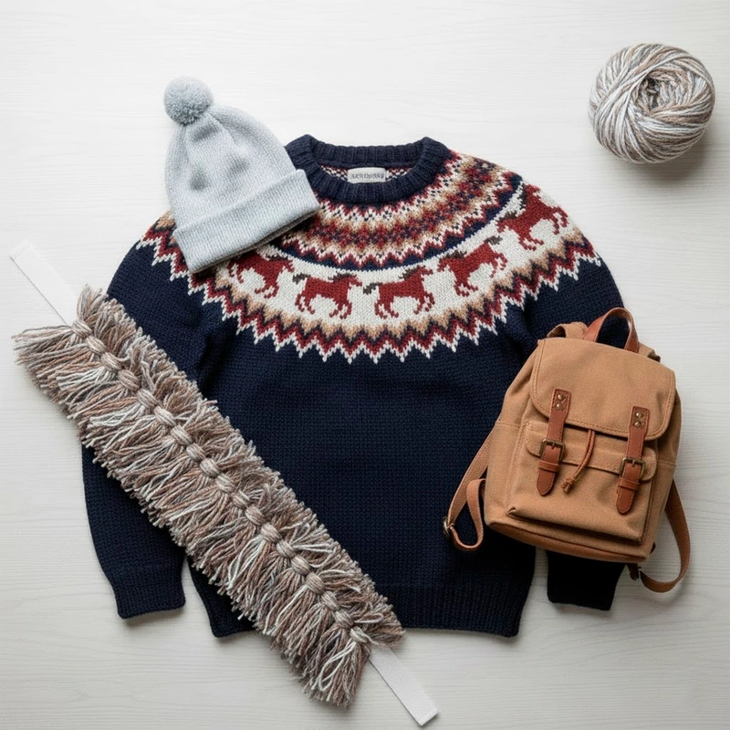
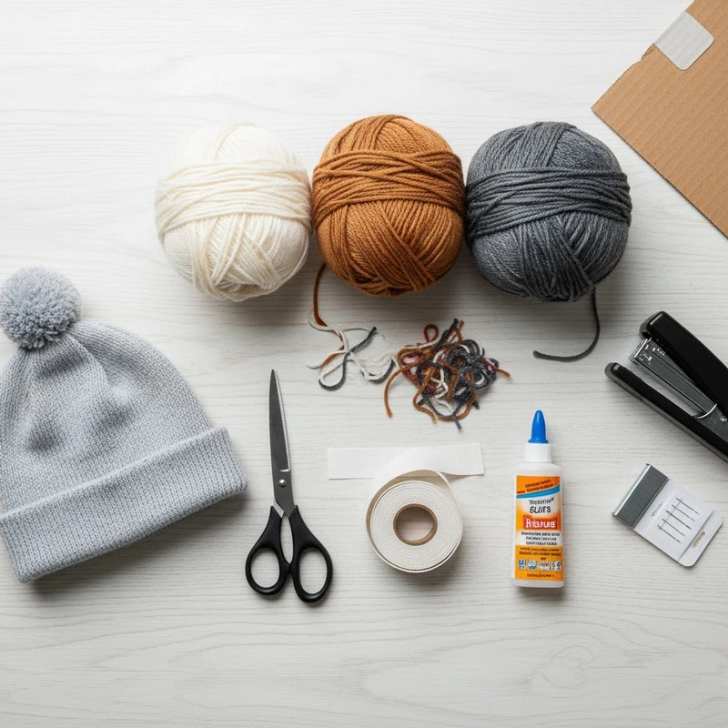
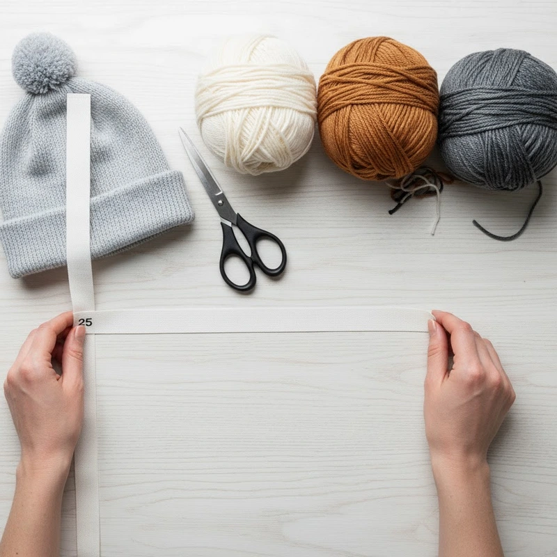
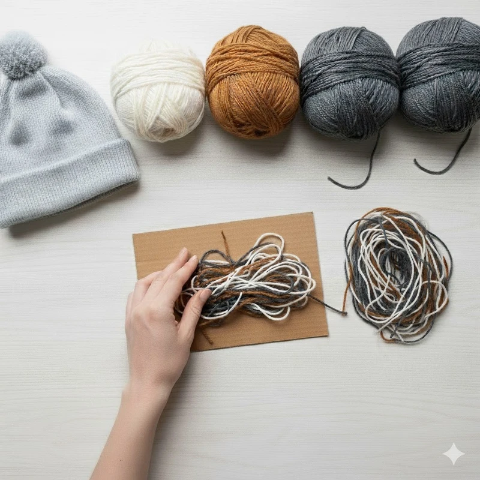
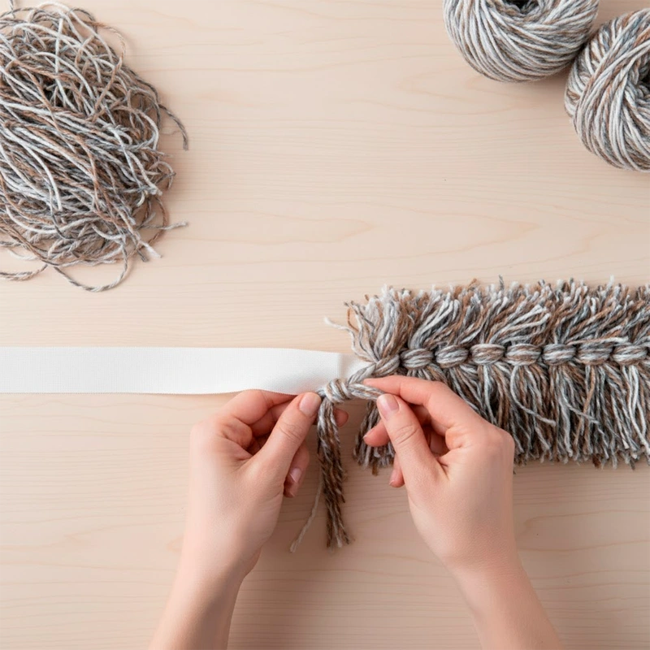
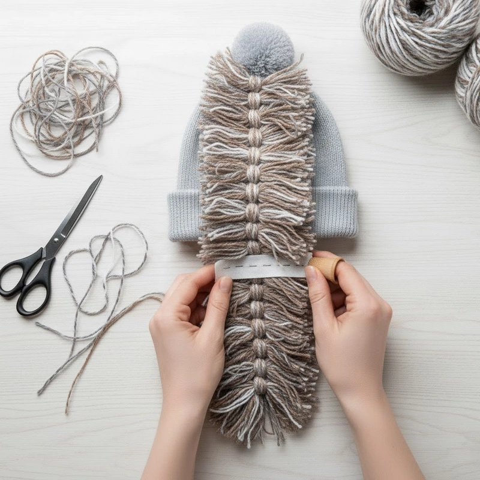

Подборка предметов гардероба

- Шапка
- Синий свитер с орнаментом
- Рюкзак
- Грива из пряжи
Совет. Чтобы создать эффект горба, наденьте под свитер рюкзак.
Как сделать гриву для Конька-Горбунка
Вам потребуется:

- Пряжа (белая, коричневая, серая) или нарезанные полоски ткани
- Ножницы, клей или степлер
- Иголка и нитки
- Лента/тесьма для основы гривы
-
Шаг 1

Возьмите ленту или тесьму по длине от макушки до спины.
-
Шаг 2

Нарежьте пряжу (или ткань) на одинаковые отрезки. Чем больше отрезков, тем гуще грива.
-
Шаг 3

Отрезки нитей, расположить под лентой, чтобы она находилась посередине, и завяжите узелком.
-
Шаг 4

Прикрепите готовую гриву к шапке или капюшону кофты. Пришейте несколькими стежками.

Гримёрная
Посетите гримерную нашего театра и узнайте, как сделать быстрый грим для Конька-Горбунка